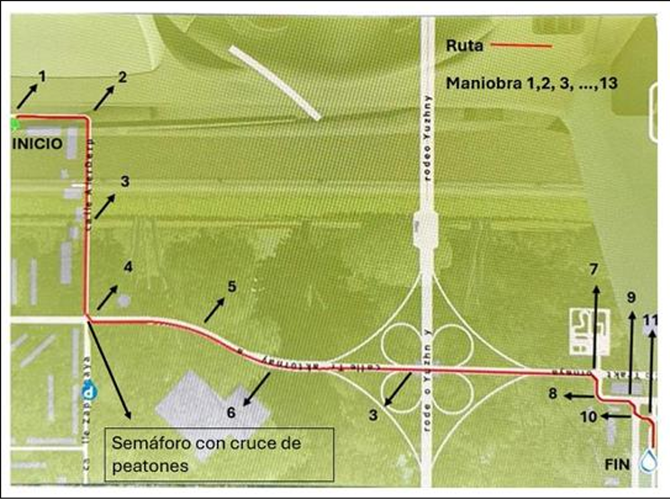

El simulador combina tecnología de punta para replicar escenarios de conducción realista. A continuación, se detalla el software y hardware utilizados:
Software
-
Simulador City Car Driving: Diseñado para prácticas seguras y evaluaciones de conducción.

Simulador City Car Driving en acción.
-
Software EmotivPRO: Herramienta avanzada para capturar y analizar datos de EEG.

Interfaz del software EmotivPRO.
-
Software EEG Synchronous: Para la sincronización de datos electrocardiográficos (ECG).

Pantalla del software EEG Synchronous.
Hardware
-
Simulador con cabina inmersiva: Incluye controles reales (Volante, pedales y palanca) y pantallas panorámicas.

Vista de la cabina inmersiva.
-
Electroencefalógrafo Emotiv EPOC X: Para capturar actividad cerebral en tiempo real.

Electroencefalógrafo Emotiv EPOC X en uso.
-
Electrocardiógrafo Sonolife: Para registrar señales ECG en pruebas simuladas.

Electrocardiógrafo Sonolife configurado.
Ruta seleccionada para las pruebas
Esta ruta ha sido seleccionada de manera que el conductor pueda realizar distintos tipos de maniobras. La ruta incluye:
- 3 vueltas a la izquierda.
- 5 vueltas a la derecha.
- 3 tramos rectos.
- 1 curva a la izquierda.
- 1 curva a la derecha.
- Cambio de carril y rebase, que se pueden realizar en cualquier momento.
La ruta se muestra en la figura 1. Se detalla el punto de inicio ("INICIO"), seleccionado automáticamente por el simulador, y el punto final ("FIN"), que se selecciona manualmente. Posteriormente, se enumeran las maniobras en el orden que el conductor debe realizarlas.

Figura 1: Ruta seleccionada para pruebas de simulación.